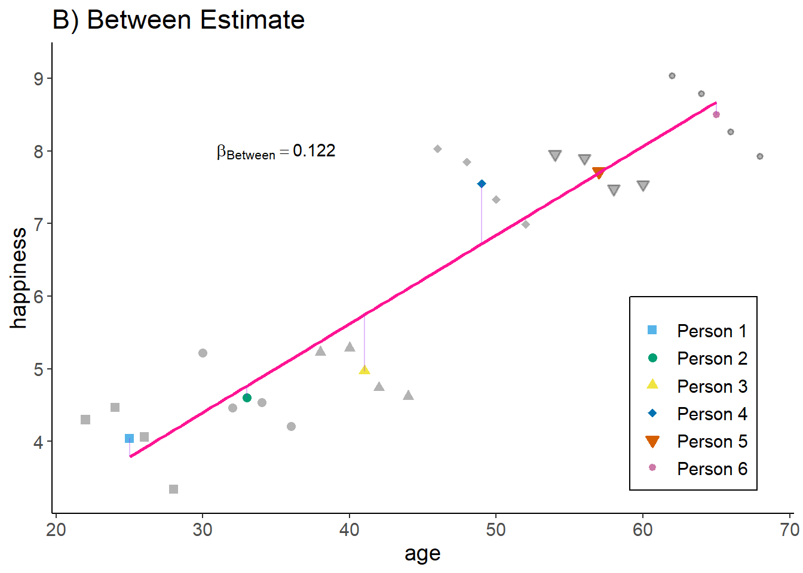
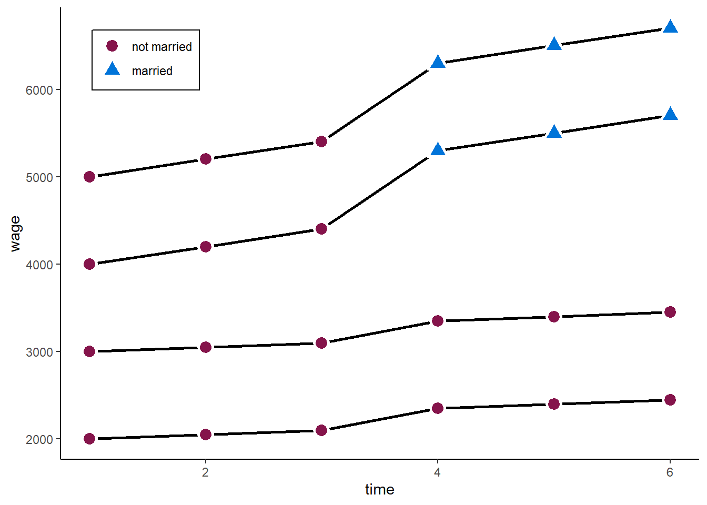
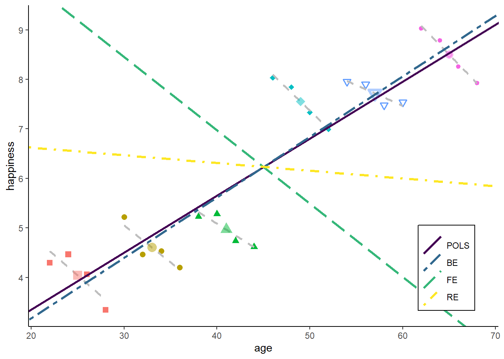
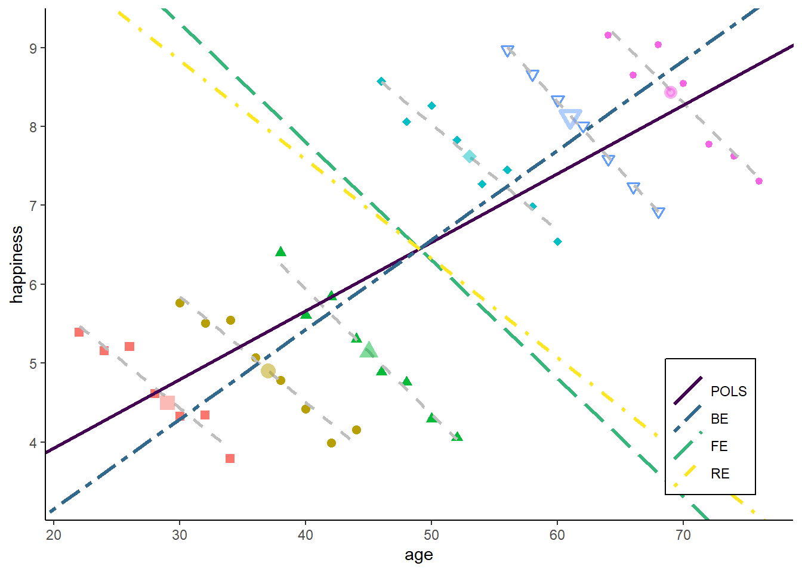
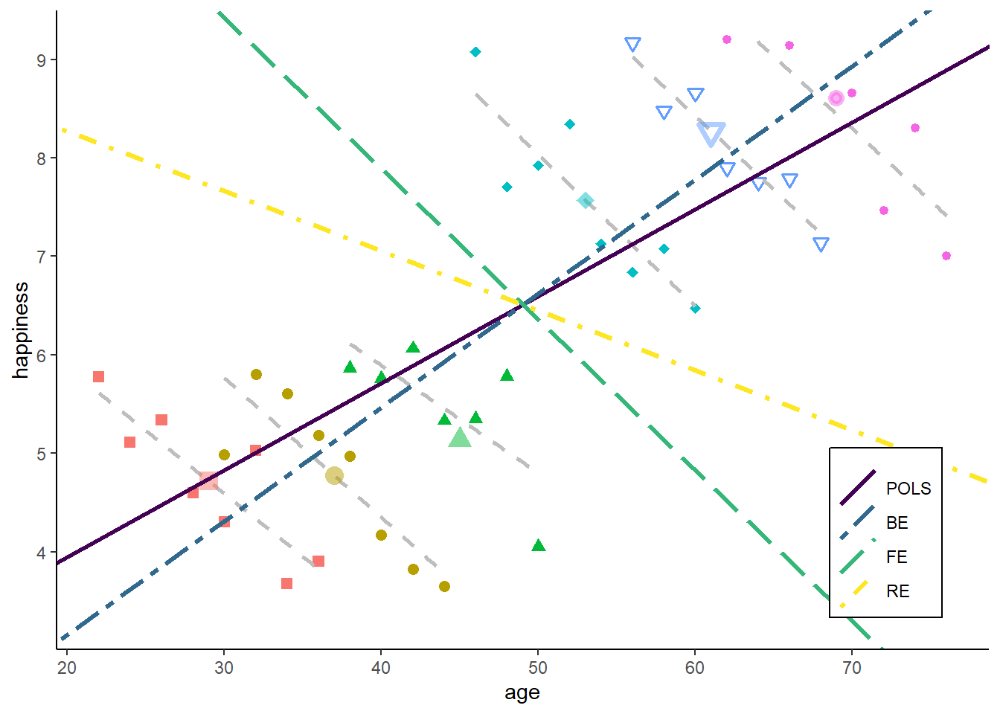

![]()
Code
pkgs <- c("plm", "lfe", "texreg", "tidyr", "dplyr", "lmtest", "sandwich",
"ggplot2", "ggforce")
lapply(pkgs, require, character.only = TRUE)pkgs <- c("plm", "lfe", "texreg", "tidyr", "dplyr", "lmtest", "sandwich",
"ggplot2", "ggforce")
lapply(pkgs, require, character.only = TRUE)sessionInfo()R version 4.3.1 (2023-06-16 ucrt)
Platform: x86_64-w64-mingw32/x64 (64-bit)
Running under: Windows 10 x64 (build 19044)
Matrix products: default
locale:
[1] LC_COLLATE=English_United Kingdom.utf8
[2] LC_CTYPE=English_United Kingdom.utf8
[3] LC_MONETARY=English_United Kingdom.utf8
[4] LC_NUMERIC=C
[5] LC_TIME=English_United Kingdom.utf8
time zone: Europe/London
tzcode source: internal
attached base packages:
[1] stats graphics grDevices utils datasets methods base
other attached packages:
[1] ggforce_0.4.1 ggplot2_3.4.2 sandwich_3.0-2 lmtest_0.9-40 zoo_1.8-12
[6] dplyr_1.1.2 tidyr_1.3.0 texreg_1.38.6 lfe_2.9-0 Matrix_1.5-4.1
[11] plm_2.6-3
loaded via a namespace (and not attached):
[1] utf8_1.2.3 generics_0.1.3 dreamerr_1.2.3
[4] lattice_0.21-8 digest_0.6.32 magrittr_2.0.3
[7] evaluate_0.21 grid_4.3.1 fastmap_1.1.1
[10] jsonlite_1.8.5 Formula_1.2-5 httr_1.4.6
[13] purrr_1.0.1 fansi_1.0.4 scales_1.2.1
[16] tweenr_2.0.2 numDeriv_2016.8-1.1 Rdpack_2.4
[19] cli_3.6.1 rlang_1.1.1 polyclip_1.10-4
[22] rbibutils_2.2.13 miscTools_0.6-28 munsell_0.5.0
[25] withr_2.5.0 yaml_2.3.7 fixest_0.11.1
[28] tools_4.3.1 parallel_4.3.1 bdsmatrix_1.3-6
[31] colorspace_2.1-0 maxLik_1.5-2 vctrs_0.6.3
[34] R6_2.5.1 lifecycle_1.0.3 htmlwidgets_1.6.2
[37] MASS_7.3-60 pkgconfig_2.0.3 gtable_0.3.3
[40] pillar_1.9.0 glue_1.6.2 Rcpp_1.0.10
[43] collapse_1.9.6 xfun_0.39 tibble_3.2.1
[46] tidyselect_1.2.0 rstudioapi_0.14 knitr_1.43
[49] farver_2.1.1 xtable_1.8-4 htmltools_0.5.5
[52] nlme_3.1-162 rmarkdown_2.23 compiler_4.3.1 Panel data structure
Decomposing variance
Fixed Effects estimator
Random Effects estimator
Hybrid / Mundlak models
Statistical inference
Usually cross-sectional data is organized as a matrix, where rows represent the obervation / individual and the columns hold the variables. In panel data settings, we need to add the dimension of time. There are two ways to do so:
Long format: \(N \times T\) observations (rows), with variables “id” and “time”.
Wide format: \(N\) observations, and \(T \times K\) variables, which one variable for each time-period.
Let’s have a look at the “Males” data of the plm package.
data("Males")
head(Males[,1:5], n = 16) nr year school exper union
1 13 1980 14 1 no
2 13 1981 14 2 yes
3 13 1982 14 3 no
4 13 1983 14 4 no
5 13 1984 14 5 no
6 13 1985 14 6 no
7 13 1986 14 7 no
8 13 1987 14 8 no
9 17 1980 13 4 no
10 17 1981 13 5 no
11 17 1982 13 6 no
12 17 1983 13 7 no
13 17 1984 13 8 no
14 17 1985 13 9 no
15 17 1986 13 10 no
16 17 1987 13 11 noThis is long format, with nr as person identifier (id) and year as time indicator. Long format is what we usually need for analysing data.
Sometimes data comes in wide format. Luckily, we can easily switch between those formats using tidyr.
Males_wide <- pivot_wider(Males, id_cols = nr, names_from = year,
values_from = 3:ncol(Males), names_sep = "_")
head(Males_wide[,1:5], n = 16)# A tibble: 16 × 5
nr school_1980 school_1981 school_1982 school_1983
<int> <int> <int> <int> <int>
1 13 14 14 14 14
2 17 13 13 13 13
3 18 12 12 12 12
4 45 12 12 12 12
5 110 12 12 12 12
6 120 10 10 10 10
7 126 13 13 13 13
8 150 12 12 12 12
9 162 11 11 11 11
10 166 10 10 10 10
11 189 14 14 14 14
12 193 14 14 14 14
13 209 11 11 11 11
14 212 11 11 11 11
15 218 15 15 15 15
16 243 12 12 12 12And we can go back to long again:
Males_long <- pivot_longer(Males_wide, cols = 2:ncol(Males_wide),
names_to = c(".value", "year"),
names_pattern = "(.*)_(.*)")
head(Males_long[,1:5], n = 16)# A tibble: 16 × 5
nr year school exper union
<int> <chr> <int> <int> <fct>
1 13 1980 14 1 no
2 13 1981 14 2 yes
3 13 1982 14 3 no
4 13 1983 14 4 no
5 13 1984 14 5 no
6 13 1985 14 6 no
7 13 1986 14 7 no
8 13 1987 14 8 no
9 17 1980 13 4 no
10 17 1981 13 5 no
11 17 1982 13 6 no
12 17 1983 13 7 no
13 17 1984 13 8 no
14 17 1985 13 9 no
15 17 1986 13 10 no
16 17 1987 13 11 no Moreover, there two types of panel data:
Balanced: Contains information for each unit at each time period
Unbalanced: Some units have missing information at some time periods
is.pbalanced(Males, index = c("nr", "year"))[1] TRUEIn our example, we have balanced data (although there might still be NAs in the data).
A nice feature of panel data is that we can do some within-person transformation. For instance we can calculate the lags and leads, or first differences of data.
always make sure the data is sorted properly before you do!
# Order data
Males <- Males[order(Males$nr, Males$year),]
# Person specific means
Males$m_wage <- ave(Males$wage,
Males$nr,
FUN = function(x) mean(x, na.rm = TRUE))
# Lag (last years value)
Males$lag_wage <- ave(Males$wage,
Males$nr,
FUN = function(x) dplyr::lag(x, n = 1))
# Lead (next years value)
Males$lead_wage <- ave(Males$wage,
Males$nr,
FUN = function(x) dplyr::lead(x, n = 1))
# First difference (this years value minus last years value)
Males$fd_wage <- ave(Males$wage,
Males$nr,
FUN = function(x) x - dplyr::lag(x, n = 1))
head(Males[, c("nr", "year", "wage", "m_wage", "lag_wage", "lead_wage", "fd_wage")], n = 16) nr year wage m_wage lag_wage lead_wage fd_wage
1 13 1980 1.1975402 1.255652 NA 1.8530600 NA
2 13 1981 1.8530600 1.255652 1.1975402 1.3444617 0.65551979
3 13 1982 1.3444617 1.255652 1.8530600 1.4332133 -0.50859832
4 13 1983 1.4332133 1.255652 1.3444617 1.5681251 0.08875166
5 13 1984 1.5681251 1.255652 1.4332133 1.6998909 0.13491174
6 13 1985 1.6998909 1.255652 1.5681251 -0.7202626 0.13176586
7 13 1986 -0.7202626 1.255652 1.6998909 1.6691879 -2.42015352
8 13 1987 1.6691879 1.255652 -0.7202626 NA 2.38945049
9 17 1980 1.6759624 1.637786 NA 1.5183982 NA
10 17 1981 1.5183982 1.637786 1.6759624 1.5591905 -0.15756420
11 17 1982 1.5591905 1.637786 1.5183982 1.7254101 0.04079228
12 17 1983 1.7254101 1.637786 1.5591905 1.6220223 0.16621961
13 17 1984 1.6220223 1.637786 1.7254101 1.6085883 -0.10338777
14 17 1985 1.6085883 1.637786 1.6220223 1.5723854 -0.01343405
15 17 1986 1.5723854 1.637786 1.6085883 1.8203339 -0.03620286
16 17 1987 1.8203339 1.637786 1.5723854 NA 0.24794844There are a lot of different panel data sources available. Some examples are:
And there are various process generated data having a longitudinal / panel dimension as well. For instance:
One thing that is often difficult: Many panel data come as a bunch of single (cross-sectional) files and have to be combined into a single dataset. However, many data providers (or nice colleagues) now offer simplified long-format data or pre-written scripts to merge data across waves (e.g. here for Understanding Society, or here for SOEP).
A second problem is panel attrition. Usually, the number of individuals participating repeatedly goes down over time.
The main question here: Is attrition (as good as) random or are drop-outs systematic? How does this affect the sample composition and representativeness?
Most panels also provide inverse-probability of staying weights to account for the possibility of non-random attrition. Note that these also probability weights can only account for attrition based on observables. For a general discussion about weighting see for instance Solon, Haider, and Wooldridge (2015).
Let’s clarify the idea and advantage of panel data with an example. Assume we want to know the relationship between age (as our independent variable) and happiness (as our dependent variable), and we have data on 24 observations.
################################
### Example 1: Age happiness ###
################################
set.seed(213)
### Data simulation program
simdata <- function(N = 6, T = 4,
age_range = c(20:60),
u_sd = 0.2, uw_sd = 0){
# id and wave
df <- data.frame(matrix(NA, ncol = 2, nrow = N*T))
names(df) <- c("id", "time")
df$id <- rep(1:N, each = T)
df$time <- rep(1:T, times = N)
df$idname <- factor(df$id, levels = c(1:N), labels = paste("Person", c(1:N)))
# age
startingage <- age_range
startingage <- round(quantile(startingage, probs = seq(0, 1, 1/(N-1))), 0)
df$age <- unname(rep(startingage, each = T)) + df$time*2
# cohort
df$cohort <- 0
df$cohort[(N*T/2 + 1):(N*T)] <- 1
df$cohort <- factor(df$cohort, levels = c(0, 1),
labels = c("Younger cohort", "Older cohort"))
# demeaned age
df$dm_age <- df$age - ave(df$age, df$id, FUN = function(x) mean(x))
# Personal intercept
df$intercept <- 5 + 0.5 * df$id
# Overall error
u <- rnorm(N*T, mean = 0, sd = u_sd)
# Additional within error
uw <- unlist(lapply(1:N, function(x) rnorm(T, mean = 0, sd = uw_sd)))
# Gen happiness
y <- 1 + 0.05 * df$age - 0.2 * df$dm_age + 2 * as.numeric(df$cohort) + u + uw
df$happiness <- y
# Gen person means
df$m_age <- ave(df$age, df$id, FUN = function(x) mean(x))
df$m_happiness <- ave(df$happiness, df$id, FUN = function(x) mean(x))
return(df)
}
### Set up six individuals with age and happiness
N <- 6
T <- 4
df <- simdata(N = N, T = T)
# Total line for plot
lm1 <- lm(happiness ~ age, data = df)
lm2 <- lm(happiness ~ age + cohort, data = df)
lm3 <- lm(happiness ~ age + idname, data = df)
lm4 <- lm(m_happiness ~ m_age, data = df)In a cross-sectional setting, we could just run a standard linear regression model using Omitted Least Squares (OLS) of the form \[ y_{i} = \alpha + \beta_1 x_{i} + \upsilon_{i}, \] where \(y_{i}\) is the dependent variable (happiness) and \(x_i\) the independent variable of each observation \(i \in \{1, \dots, 24\}\). \(\beta_1\) is the coefficient of interest, \(\alpha\) the overall intercept and \(\upsilon_{i}\) the error term.
lm1 <- lm(happiness ~ age, data = df)
summary(lm1)
Call:
lm(formula = happiness ~ age, data = df)
Residuals:
Min 1Q Median 3Q Max
-1.4964 -0.4209 -0.1201 0.6615 1.6868
Coefficients:
Estimate Std. Error t value Pr(>|t|)
(Intercept) 1.0506 0.5696 1.844 0.0787 .
age 0.1151 0.0121 9.515 2.96e-09 ***
---
Signif. codes: 0 '***' 0.001 '**' 0.01 '*' 0.05 '.' 0.1 ' ' 1
Residual standard error: 0.8206 on 22 degrees of freedom
Multiple R-squared: 0.8045, Adjusted R-squared: 0.7956
F-statistic: 90.53 on 1 and 22 DF, p-value: 2.96e-09This indicates a positive relation between age and happiness. Graphically, this would look like:
# The palette with black:
cbp2 <- c("#000000",
"#E69F00",
"#56B4E9",
"#009E73",
"#F0E442",
"#0072B2",
"#D55E00",
"#CC79A7")
# Save the residual values
df$predicted <- predict(lm1)
df$residuals <- residuals(lm1)
zp1 <- ggplot(df, aes(age, happiness)) +
geom_point( aes(x = age, y = happiness), size = 2, stroke = 1) +
geom_smooth(method = 'lm', formula = y ~ x, se = FALSE, color = "deeppink") +
geom_segment(data = df, aes(xend = age, yend = predicted),
alpha = .3, color = "purple") +
ylim(3.3, 9.2) + expand_limits(y = c(0, 0)) +
theme_classic() +
theme(legend.key = element_blank(), legend.title = element_blank(),
legend.position = c(0.95,0.05), legend.justification = c("right", "bottom"),
legend.background = element_blank(),
legend.box.background = element_rect(colour = "black"))
zp1 
Obviously, we might suspect some other characteristics to influence our results. For instance, birth cohort might be a potential confounder that affects age and happiness. We can easily add a control for the cohort to account for this possibility. We would then estimate the model
\[ y_{i} = \alpha + \beta_1 x_{i} + \beta_2 z_{it} + \upsilon_{i}, \] where \(z_i\) is the control variable or confounder (cohort).
lm2 <- lm(happiness ~ age + cohort, data = df)
summary(lm2)
Call:
lm(formula = happiness ~ age + cohort, data = df)
Residuals:
Min 1Q Median 3Q Max
-1.01188 -0.35012 -0.01682 0.31611 0.92289
Coefficients:
Estimate Std. Error t value Pr(>|t|)
(Intercept) 3.32191 0.52030 6.385 2.50e-06 ***
age 0.03687 0.01512 2.439 0.0237 *
cohortOlder cohort 2.49959 0.41862 5.971 6.31e-06 ***
---
Signif. codes: 0 '***' 0.001 '**' 0.01 '*' 0.05 '.' 0.1 ' ' 1
Residual standard error: 0.5114 on 21 degrees of freedom
Multiple R-squared: 0.9275, Adjusted R-squared: 0.9206
F-statistic: 134.4 on 2 and 21 DF, p-value: 1.075e-12As a result, the effect of age becomes weaker. Graphically, this would look like:
# Save the residual values
for(i in unique(df$cohort)){
oo <- which(df$cohort == i)
lmt <- lm(happiness ~ age, data = df[oo, ])
df$predicted[oo] <- predict(lmt)
df$residuals[oo] <- residuals(lmt)
}
zp2 <- ggplot(df, aes(age, happiness)) +
geom_point(aes(x = age, y = happiness, shape = cohort, colour = cohort),
size = 2, stroke = 1) +
geom_smooth(method = 'lm', formula = y ~ x, se = FALSE, show.legend = FALSE,
mapping = aes(colour = cohort, linetype = cohort)) +
geom_segment(data = df, aes(xend = age, yend = predicted),
alpha = .3, color = "purple") +
geom_abline(intercept = lm2$coefficients[1] + 0.5 * lm2$coefficients[3],
slope = lm2$coefficients[2], color = "deeppink") +
ylim(3.3, 9.2) + expand_limits(y = c(0, 0)) +
scale_colour_manual(values = cbp2[-c(1, 2)]) +
scale_fill_manual(values = cbp2[-c(1, 2)]) +
scale_shape_manual(values = c(15:18, 25, 20)) +
theme_classic() +
theme(legend.key = element_blank(), legend.title = element_blank(),
legend.position = c(0.95,0.05), legend.justification = c("right", "bottom"),
legend.background = element_blank(),
legend.box.background = element_rect(colour = "black"))
zp2 So, what we basically receive here is the (weighted) average effect within each birth cohort. We use only similar observations (in terms of cohort) to estimate our effect of interest - the correlation between age and happiness. If we add any controls, we always decompose the variance which contributes to our estimator, and we eliminate the variance that is attributed to the confounder / control variable.

Now, with panel data, we can even go a step further. Assume we would not have observed 24 independent observations, but rather 6 independent individuals (N = 6) at 4 time-points each (T = 4).
zp3 <- ggplot(df, aes(age, happiness)) +
geom_point( aes(x = age, y = happiness, shape = idname, colour = idname, fill = idname),
size = 2, stroke = 1) +
ylim(3.3, 9.2) + expand_limits(y = c(0, 0)) +
scale_colour_manual(values = cbp2[-c(1, 2)]) +
scale_fill_manual(values = cbp2[-c(1, 2)]) +
scale_shape_manual(values = c(15:18, 25, 20)) +
theme_classic() +
theme(legend.key = element_blank(), legend.title = element_blank(),
legend.position = c(0.95,0.05), legend.justification = c("right", "bottom"),
legend.background = element_blank(),
legend.box.background = element_rect(colour = "black"))
zp3 
We can then decompose the available variance into three different parts:
Pooled variance
Between variance
Within variance
The pooled estimator equals what we have seen in the cross-sectional example: we basically assume that we have 24 independent observations and we ignore the person and time dimension. The Pooled OLS estimator is simply:
\[ y_{it} = \alpha + \beta_{POLS} x_{it} + \upsilon_{it}, \]
And, as above, we use the simple lm() command
lm1 <- lm(happiness ~ age, data = df)
summary(lm1)
Call:
lm(formula = happiness ~ age, data = df)
Residuals:
Min 1Q Median 3Q Max
-1.4964 -0.4209 -0.1201 0.6615 1.6868
Coefficients:
Estimate Std. Error t value Pr(>|t|)
(Intercept) 1.0506 0.5696 1.844 0.0787 .
age 0.1151 0.0121 9.515 2.96e-09 ***
---
Signif. codes: 0 '***' 0.001 '**' 0.01 '*' 0.05 '.' 0.1 ' ' 1
Residual standard error: 0.8206 on 22 degrees of freedom
Multiple R-squared: 0.8045, Adjusted R-squared: 0.7956
F-statistic: 90.53 on 1 and 22 DF, p-value: 2.96e-09which graphically looks like:
# Save the residual values
df$predicted <- predict(lm1)
df$residuals <- residuals(lm1)
zp3 <- ggplot(df, aes(age, happiness)) +
geom_point( aes(x = age, y = happiness, shape = idname, colour = idname, fill = idname),
size = 2, stroke = 1) +
geom_smooth(method = 'lm', formula = y ~ x, se = FALSE,
color = "deeppink") +
geom_segment(aes(xend = age, yend = predicted),
alpha = .3, color = "purple") +
annotate("text", x = 35, y = 8.0,
label = paste0("beta[Pooled] ==", round(lm1$coefficients[2], 3)),
parse = TRUE) +
ylim(3.3, 9.2) + expand_limits(y = c(0, 0)) +
scale_colour_manual(values = cbp2[-c(1, 2)]) +
scale_fill_manual(values = cbp2[-c(1, 2)]) +
scale_shape_manual(values = c(15:18, 25, 20)) +
ggtitle("A) Pooled Estimate") +
theme_classic() +
theme(legend.key = element_blank(),
legend.title = element_blank(),
text = element_text(size = 14),
legend.position = c(0.95,0.05),
legend.justification = c("right", "bottom"),
legend.background = element_blank(),
legend.box.background = element_rect(colour = "black"))
zp3Interpretation: The higher the age of an observation, the higher their happiness.
The between estimator only compares different persons and discards the within-person variance. Therefore, we simply run a model that only uses the person-specific means
\[ \bar{y_{i}} = \alpha + \beta_{BTW} \bar{x_{i}} + \bar{\upsilon_{i}}, \]
We can either estimate this by hand:
df$m_happiness <- ave(df$happiness, df$id, FUN = mean)
df$m_age <- ave(df$age, df$id, FUN = mean)
lm2 <- lm(m_happiness ~ m_age, data = df)
summary(lm2)
Call:
lm(formula = m_happiness ~ m_age, data = df)
Residuals:
Min 1Q Median 3Q Max
-0.77437 -0.17518 -0.06819 0.25424 0.83169
Coefficients:
Estimate Std. Error t value Pr(>|t|)
(Intercept) 0.733095 0.356036 2.059 0.0515 .
m_age 0.122176 0.007571 16.138 1.12e-13 ***
---
Signif. codes: 0 '***' 0.001 '**' 0.01 '*' 0.05 '.' 0.1 ' ' 1
Residual standard error: 0.5067 on 22 degrees of freedom
Multiple R-squared: 0.9221, Adjusted R-squared: 0.9186
F-statistic: 260.4 on 1 and 22 DF, p-value: 1.118e-13or we use the plm package to do the job for us
btw2 <- plm(happiness ~ age, data = df,
index = c("id", "time"),
effect = "individual", model = "between")
summary(btw2)Oneway (individual) effect Between Model
Call:
plm(formula = happiness ~ age, data = df, effect = "individual",
model = "between", index = c("id", "time"))
Balanced Panel: n = 6, T = 4, N = 24
Observations used in estimation: 6
Residuals:
1 2 3 4 5 6
0.254242 -0.158370 -0.774367 0.831689 0.021989 -0.175184
Coefficients:
Estimate Std. Error t-value Pr(>|t|)
(Intercept) 0.733095 0.834979 0.8780 0.429528
age 0.122176 0.017755 6.8813 0.002337 **
---
Signif. codes: 0 '***' 0.001 '**' 0.01 '*' 0.05 '.' 0.1 ' ' 1
Total Sum of Squares: 18.13
Residual Sum of Squares: 1.4122
R-Squared: 0.92211
Adj. R-Squared: 0.90263
F-statistic: 47.3519 on 1 and 4 DF, p-value: 0.0023371NOTE the line “observations used in estimation” ! The manual approach with lm assumes we have 24 independent observations. This is not true, we only have 6 independent observations, where each is replicated 4 times in the data.
Graphically this result looks like:
df2 <- df
df2$happiness <- df2$m_happiness
df2$age <- df2$m_age
df2 <- df2[which(df2$time == 1), ]
# Save the residual values
lm4 <- lm(m_happiness ~ m_age, data = df2)
df2$predicted <- predict(lm4)
df2$residuals <- residuals(lm4)
zp4 <- ggplot(df, aes(age, happiness)) +
geom_point(aes(x = age, y = happiness, shape = idname),
size = 2, stroke = 1, colour = alpha("black", .3), fill = alpha("black", .3)) +
geom_point(aes(x = m_age, y = m_happiness, shape = idname, colour = idname,
fill = idname),
size = 2, stroke = 1) +
geom_smooth(data = df2,
method = 'lm', formula = y ~ x, se = FALSE,
color = "deeppink") +
geom_segment(data = df2, aes(xend = age, yend = predicted),
alpha = .3, color = "purple") +
annotate("text", x = 35, y = 8.0,
label = paste0("beta[Between] ==", round(lm4$coefficients[2], 3)),
parse = TRUE) +
ylim(3.3, 9.2) + expand_limits(y = c(0, 0)) +
scale_colour_manual(values = cbp2[-c(1, 2)]) +
scale_fill_manual(values = cbp2[-c(1, 2)]) +
scale_shape_manual(values = c(15:18, 25, 20)) +
ggtitle("B) Between Estimate") +
theme_classic() +
theme(legend.key = element_blank(),
legend.title = element_blank(),
text = element_text(size = 14),
legend.position = c(0.95,0.05),
legend.justification = c("right", "bottom"),
legend.background = element_blank(),
legend.box.background = element_rect(colour = "black"))
zp4 
Interpretation: The older a person the higher their hapinness (as compared to younger people).
The within estimator only compares different periods within the same person and discards the between-person variance. We could also say the estimator is solely based on changes over time. To achieve this, we simply give every person their own intercept / add a dummy for each person (similar to the cohort example above).
\[ y_{it} = \alpha_i + \beta_{WI} x_{it} + \epsilon_{it}, \]
Again, we could run this manually
lm3 <- lm(happiness ~ age + idname, data = df)
summary(lm3)
Call:
lm(formula = happiness ~ age + idname, data = df)
Residuals:
Min 1Q Median 3Q Max
-0.28791 -0.11875 0.03583 0.14172 0.27594
Coefficients:
Estimate Std. Error t value Pr(>|t|)
(Intercept) 7.74785 0.44579 17.380 2.93e-12 ***
age -0.14824 0.01742 -8.511 1.56e-07 ***
idnamePerson 2 1.75075 0.19396 9.026 6.80e-08 ***
idnamePerson 3 3.29812 0.30964 10.652 6.09e-09 ***
idnamePerson 4 7.06754 0.43927 16.089 1.01e-11 ***
idnamePerson 5 8.42120 0.57348 14.684 4.34e-11 ***
idnamePerson 6 10.38740 0.70968 14.637 4.57e-11 ***
---
Signif. codes: 0 '***' 0.001 '**' 0.01 '*' 0.05 '.' 0.1 ' ' 1
Residual standard error: 0.1908 on 17 degrees of freedom
Multiple R-squared: 0.9918, Adjusted R-squared: 0.9889
F-statistic: 344.1 on 6 and 17 DF, p-value: < 2.2e-16or we use plm:
fe1 <- plm(happiness ~ age, data = df,
index = c("id", "time"),
effect = "individual", model = "within")
summary(fe1)Oneway (individual) effect Within Model
Call:
plm(formula = happiness ~ age, data = df, effect = "individual",
model = "within", index = c("id", "time"))
Balanced Panel: n = 6, T = 4, N = 24
Residuals:
Min. 1st Qu. Median 3rd Qu. Max.
-0.287907 -0.118754 0.035834 0.141721 0.275941
Coefficients:
Estimate Std. Error t-value Pr(>|t|)
age -0.148245 0.017418 -8.5108 1.556e-07 ***
---
Signif. codes: 0 '***' 0.001 '**' 0.01 '*' 0.05 '.' 0.1 ' ' 1
Total Sum of Squares: 3.2561
Residual Sum of Squares: 0.61893
R-Squared: 0.80992
Adj. R-Squared: 0.74283
F-statistic: 72.4345 on 1 and 17 DF, p-value: 1.5556e-07Graphically, this would look like:
df2 <- df
df2$happiness <- df2$happiness - df2$m_happiness + mean(df$happiness)
df2$age <- df2$age - df2$m_age + mean(df$age)
# Save the residual values
for(i in unique(df$id)){
oo <- which(df$id == i)
lmt <- lm(happiness ~ age, data = df[oo, ])
df$predicted[oo] <- predict(lmt)
df$residuals[oo] <- residuals(lmt)
}
zp5 <- ggplot(df, aes(age, happiness)) +
geom_point( aes(x = age, y = happiness, shape = idname, colour = idname, fill = idname),
size = 2, stroke = 1) +
geom_smooth(method = 'lm', formula = y ~ x, se = FALSE, show.legend = FALSE,
mapping = aes(group = idname),
color = "deeppink", linetype = "dotted") +
geom_smooth(method = 'lm', formula = y ~ x, se = FALSE, show.legend = FALSE,
data = df2, color = "deeppink", fullrange = TRUE) +
geom_segment(data = df, aes(xend = age, yend = predicted),
alpha = .3, color = "purple") +
annotate("text", x = 35, y = 8.0,
label = paste0("beta[Within] ==", round(lm3$coefficients[2], 3)),
parse = TRUE) +
ylim(3.3, 9.2) + expand_limits(y = c(0, 0)) +
scale_fill_manual(values = cbp2[-c(1, 2)]) +
scale_colour_manual(values = cbp2[-c(1, 2)]) +
scale_shape_manual(values = c(15:18, 25, 20)) +
ggtitle("C) Within Estimate / Fixed Effects") +
theme_classic() +
theme(legend.key = element_blank(),
legend.title = element_blank(),
text = element_text(size = 14),
legend.position = c(0.95,0.05),
legend.justification = c("right", "bottom"),
legend.background = element_blank(),
legend.box.background = element_rect(colour = "black"))
zp5
Now, we have estimated the effect by only taking observations within each person into account: given the person id, how does age correlate with happiness.
Interpretation: The older a person gets, the lower this person’s happiness (as compared to the same persons younger age).
The principle is very similar to including a (binary) control variable. It’s just that we include a lot of them to get rid of a lot of (potentially confounded) variance.

screenreg(list(lm1, lm2, lm3), digits = 3,
custom.model.names = c("POLS", "Between", "Within"))
==================================================
POLS Between Within
--------------------------------------------------
(Intercept) 1.051 0.733 7.748 ***
(0.570) (0.356) (0.446)
age 0.115 *** -0.148 ***
(0.012) (0.017)
m_age 0.122 ***
(0.008)
idnamePerson 2 1.751 ***
(0.194)
idnamePerson 3 3.298 ***
(0.310)
idnamePerson 4 7.068 ***
(0.439)
idnamePerson 5 8.421 ***
(0.573)
idnamePerson 6 10.387 ***
(0.710)
--------------------------------------------------
R^2 0.805 0.922 0.992
Adj. R^2 0.796 0.919 0.989
Num. obs. 24 24 24
==================================================
*** p < 0.001; ** p < 0.01; * p < 0.05POLS: The older an observation (person-year), the higher its happiness.
Between: The older a person, the higher their happiness.
Within: Increasing age within a person goes along with declining happiness within the same person.
The estimates for \(\beta_{POLS}\) and \(\beta_{BTW}\) are very similar here. We will see below why.

The estimator we used above to derive the within coefficient is the fixed effects (FE) estimator. This method is very widely used, especially with survey data.
We use a second example here: assume we observe 4 individuals over 6 periods, and we want to estimate the effect of marriage on the wage for males. This is the so called “marriage wage premium” (Ludwig and Brüderl 2018).
##################################
### Example 2: Marriage Income ###
##################################
### Set up six individuals with age and happiness
N <- 4
T <- 6
# id and wave
df2 <- data.frame(matrix(NA, ncol = 2, nrow = N*T))
names(df2) <- c("id", "time")
df2$id <- rep(1:N, each = T)
df2$time <- rep(1:T, times = N)
df2$idname <- factor(df2$id, levels = c(1:N), labels = paste("Person", c(1:N)))
# Marriage dummy
df2$marriage_ever <- 0
df2$marriage_ever[(N*T/2 + 1):(N*T)] <- 1
df2$marriage <- df2$marriage_ever * ifelse(df2$time >= 4, 1, 0)
# Starting wage
stw <- c(2000, 5000)
stw <- round(quantile(stw, probs = seq(0, 1, 1/(N-1))), 0)
# wage equation
df2$wage <- unname(rep(stw, each = T)) + (df2$time - 1)*50 + 200 * ifelse(df2$time >=4, 1, 0) + df2$marriage * 500
# counterfactual parallel trend
df2$pti <- unname(rep(stw, each = T)) + (df2$time - 1)*50
df2$pt <- unname(rep(stw, each = T)) + (df2$time - 1)*50 + 200 * ifelse(df2$time >=4, 1, 0)
df2$pti[df2$marriage_ever == 0 | df2$time < 3] <- NA
df2$pt[df2$marriage_ever == 0 | df2$time < 3] <- NA
### Add individual slope / heterogeneous time trends
# wage equation
df2$wage2 <- unname(rep(stw, each = T)) + (df2$time - 1)*50 + (df2$time - 1)*150*df2$marriage_ever + 200 * ifelse(df2$time >=4, 1, 0) + df2$marriage * 500
# parallel trend
df2$pt2 <- unname(rep(stw, each = T)) + (df2$time - 1)*50 + 200 * ifelse(df2$time >=4, 1, 0) + 2*150
df2$pt2[df2$marriage_ever == 0 | df2$time < 3] <- NA
# actual trend
df2$pt2_cr <- unname(rep(stw, each = T)) + (df2$time - 1)*50 + (df2$time - 1)*150*df2$marriage_ever + 200 * ifelse(df2$time >=4, 1, 0)
df2$pt2_cr[df2$marriage_ever == 0 | df2$time < 3] <- NA
# Marry to factor
df2$marriage <- factor(df2$marriage, levels = c(0, 1), labels = c("not married", "married"))
df2$marriage_ever <- as.factor(df2$marriage_ever)
### Plot
zp1 <- ggplot(df2, aes(time, wage)) +
geom_line(aes(x = time, y = wage, group = id), lty = "solid", colour = "black", lwd = 1) +
geom_point( aes(x = time, y = wage, shape = marriage, fill = marriage),
size = 4, stroke = 1.5, color = "white") +
theme_classic() +
scale_shape_manual(values = c(21, 24)) +
scale_fill_manual(values = c("#85144b", "#0074D9")) +
scale_color_manual(values = c("#85144b", "#0074D9")) +
theme(legend.key = element_blank(), legend.title = element_blank(),
legend.position = c(0.05,0.95), legend.justification = c("left", "top"),
legend.background = element_blank(),
legend.box.background = element_rect(colour = "black"),
legend.spacing.y = unit(-0.1, "cm"))
zp1 Let’s start with the conventional Pooled OLS (POLS) estimator on panel data
\[ y_{it} = \alpha + \beta x_{it} + \upsilon_{it} \]
The main problem: this model relies on very strong assumptions for consistency, with the most important one being:
The error (including omitted variables) must not be correlated with \(x_{it}\). In observational studies, we cannot observe a lot of things and characteristics (unobservables) such as personal views, psychological traits, or empathy. However, everything that influences \(y_{it}\) but is unobserved ends up in \(\upsilon_{it}\). If anything correlates with \(x_{it}\), it is endogenous, and \(\hat{\beta}_x\) will be biased.
Take our marriage example.
summary(lm(wage ~ marriage, data = df2))
Call:
lm(formula = wage ~ marriage, data = df2)
Residuals:
Min 1Q Median 3Q Max
-1333.3 -633.3 -108.3 579.2 1766.7
Coefficients:
Estimate Std. Error t value Pr(>|t|)
(Intercept) 3333.3 223.2 14.934 5.37e-13 ***
marriagemarried 2066.7 446.4 4.629 0.00013 ***
---
Signif. codes: 0 '***' 0.001 '**' 0.01 '*' 0.05 '.' 0.1 ' ' 1
Residual standard error: 947 on 22 degrees of freedom
Multiple R-squared: 0.4935, Adjusted R-squared: 0.4704
F-statistic: 21.43 on 1 and 22 DF, p-value: 0.0001297We would estimate a marriage premium of more than 2,000. The true value is 500. The reason: those who marry at some point already had higher wages before they married. Maybe friendly or emphatic people are more likely to mary and also do better in their job.
### Plot
zp2 <- ggplot(df2, aes(time, wage)) +
geom_line(aes(x = time, y = wage, group = id), lty = "solid", colour = "black", lwd = 1) +
geom_point( aes(x = time, y = wage, shape = marriage, fill = marriage),
size = 4, stroke = 1.5, color = "white") +
geom_mark_hull(expand = 0.01, aes(fill = marriage), show.legend = FALSE, colour = NA) +
theme_classic() +
scale_shape_manual(values = c(21, 24)) +
scale_fill_manual(values = c("#85144b", "#0074D9")) +
scale_color_manual(values = c("#85144b", "#0074D9")) +
theme(legend.key = element_blank(), legend.title = element_blank(),
legend.position = c(0.05,0.95), legend.justification = c("left", "top"),
legend.background = element_blank(),
legend.box.background = element_rect(colour = "black"),
legend.spacing.y = unit(-0.1, "cm"))
zp2
To relax the strong assumption, we can decompose the error into two parts (between and within) if we use panel data: \(\upsilon_{it} = \alpha_i + \epsilon_{it}\), where \(\alpha_i\) is the time-constant (person-specific or between) part of the error, and \(\epsilon_{it}\) is the time-varying (idiosyncratic or within) part of the error.
We can thus split up our main assumption for consistency:
\(\mathrm{E}(\alpha_{i} | x_{it}) = 0\): No time-constant unobserved heterogeneity
\(\mathrm{E}(\epsilon_{it} | x_{it}) = 0\): No time-varying unobserved heterogeneity
And write the error component model:
\[ y_{it} = \beta x_{it} + \alpha_i + \epsilon_{it} \] As we have seen above, we can include person-dummies to estimate the model above. However, this becomes computationally intense if we have thousands of individuals
Thus, we usually use a transformation approach, where we first subtract the between variance by using use the person-specific means:
\[ \bar{y_{i}} = \beta \bar{x_{i}} + \alpha_i + \bar{\epsilon_{i}} \]
We then subtract this between part from the pooled data:
\[ y_{it} - \bar{y_{i}} = \beta (x_{it}-\bar{x_{i}}) + (\alpha_i - \alpha_i) + (\epsilon_{it}-\bar{\epsilon_{i}})\\ \tilde{y}_{it} = \beta \tilde{x}_{it} + \tilde{\epsilon}_{it}. \]
This is called the within transformation. For each group (individual, district, firm), we subtract the group-specific mean from the original variable. This eliminates all between-group variance, including the person-specific part of the error term (\(\alpha_i\)).
The \(\hat{\beta}_{FE}\) is then just the OLS estimator on the transformed data:
\[ \hat{\boldsymbol{\mathbf{\beta}}} = (\boldsymbol{\mathbf{X}}^\intercal\boldsymbol{\mathbf{X}})^{-1}\boldsymbol{\mathbf{X}}^\intercal \boldsymbol{\mathbf{y}} \]
This also means that every time-constant variable is wiped out - we cannot estimate their effects in FE models! :::
The FE estimator can only be applied to observations which are at least observed 2 times (\(T \geq 2\))!__
The main assumption for consistency now is
Idiosyncratic time-variation in \(\epsilon_it\) must be uncorrelated with variation in \(x_it\) across all time periods. However, \(\mathrm{E}(\alpha_{i} | x_{i})\) can be any function of \(x_i\).
Time-constant unobserved heterogeneity is allowed
Only time-varying unobserved heterogeneity biases the estimator
We can use the plm package with options effect = "individual" and model = "within" to estimate one-ways FE models:
fe2 <- plm(wage ~ marriage, data = df2,
index = c("id", "time"),
effect = "individual", model = "within")
summary(fe2)Oneway (individual) effect Within Model
Call:
plm(formula = wage ~ marriage, data = df2, effect = "individual",
model = "within", index = c("id", "time"))
Balanced Panel: n = 4, T = 6, N = 24
Residuals:
Min. 1st Qu. Median 3rd Qu. Max.
-225.00 -68.75 0.00 68.75 225.00
Coefficients:
Estimate Std. Error t-value Pr(>|t|)
marriagemarried 850.000 84.552 10.053 4.834e-09 ***
---
Signif. codes: 0 '***' 0.001 '**' 0.01 '*' 0.05 '.' 0.1 ' ' 1
Total Sum of Squares: 2575000
Residual Sum of Squares: 407500
R-Squared: 0.84175
Adj. R-Squared: 0.80843
F-statistic: 101.061 on 1 and 19 DF, p-value: 4.8337e-09Hm, 850 is closer to 500, but still quite far off! Let’s see why.
### Plot
zp3 <- ggplot(df2, aes(time, wage)) +
geom_line(aes(x = time, y = wage, group = id, alpha = marriage_ever), lty = "solid", colour = "black", lwd = 1) +
geom_point( aes(x = time, y = wage, shape = marriage, fill = marriage, alpha = marriage_ever),
size = 4, stroke = 1.5, color = "white") +
geom_line(aes(x = time, y = pti, group = id, linetype = "dashed"), colour = "blue", lwd = 1) +
scale_linetype_identity(labels = "Counterfactual", guide = "legend") +
scale_alpha_manual(values = c(0.5, 1), guide = "none") +
# geom_mark_hull(data = df2[df2$marriage_ever == 1, ], aes(x = time, y = wage, fill = marriage),
# expand = 0.01, show.legend = FALSE, colour = NA) +
theme_classic() +
scale_shape_manual(values = c(21, 24)) +
scale_fill_manual(values = c("#85144b", "#0074D9")) +
scale_color_manual(values = c("#85144b", "#0074D9")) +
theme(legend.key = element_blank(), legend.title = element_blank(),
legend.position = c(0.05,0.95), legend.justification = c("left", "top"),
legend.background = element_blank(),
legend.box.background = element_rect(colour = "black"),
legend.spacing.y = unit(-0.1, "cm"))
zp3
A one-ways FE would effectively drop all those observations without within-variance on the independent variables. In our case, we would disregard those who never marry.
However, they also experienced an increase in wages when the other two married.
To circumvent the problem above, we want to add the never-married as a control group in our estimator.
In general, it is always a good idea to control for temporal shocks!
We can do so by including person fixed effects and time fixed effects:
\[ y_{it} = \beta x_{it} + \alpha_i + \zeta_t + \epsilon_{it}, \]
where \(\zeta_t\) are time fixed effects (analogous to \(\alpha_i\)). In terms of demeaning this would look like:
\[ (y_{it} - \bar{y}_i - \bar{y}_t + \bar{y}) = \beta (x_{it} - \bar{x}_i - \bar{x}_t + \bar{x}) + (\epsilon_{it} - \bar{\epsilon}_i - \bar{\epsilon}_t + \bar{\epsilon}). \]
This removes common time shocks independent of treatment, and takes back in individuals without variation in \(x\). We basically add a `control-group’ to the estimation.
We can just change the effect option in plm to “twoways” to achieve this:
fe3 <- plm(wage ~ marriage, data = df2,
index = c("id", "time"),
effect = "twoways", model = "within")
summary(fe3)Twoways effects Within Model
Call:
plm(formula = wage ~ marriage, data = df2, effect = "twoways",
model = "within", index = c("id", "time"))
Balanced Panel: n = 4, T = 6, N = 24
Residuals:
Min. 1st Qu. Median 3rd Qu. Max.
-1.1603e-14 -1.1603e-14 1.1603e-14 1.1603e-14 2.6687e-13
Coefficients:
Estimate Std. Error t-value Pr(>|t|)
marriagemarried 5.0000e+02 5.9489e-14 8.405e+15 < 2.2e-16 ***
---
Signif. codes: 0 '***' 0.001 '**' 0.01 '*' 0.05 '.' 0.1 ' ' 1
Total Sum of Squares: 375000
Residual Sum of Squares: 7.4317e-26
R-Squared: 1
Adj. R-Squared: 1
F-statistic: 7.06433e+31 on 1 and 14 DF, p-value: < 2.22e-16And here we go with our 500 marriage wage premium. What we do graphically is
### Plot
zp4 <- ggplot(df2, aes(time, wage)) +
geom_line(aes(x = time, y = wage, group = id), lty = "solid", colour = "black", lwd = 1) +
geom_point( aes(x = time, y = wage, shape = marriage, fill = marriage),
size = 4, stroke = 1.5, color = "white") +
geom_line(aes(x = time, y = pt, group = id, linetype = "dashed"), colour = "blue", lwd = 1) +
scale_linetype_identity(labels = "Counterfactual", guide = "legend") +
theme_classic() +
scale_shape_manual(values = c(21, 24)) +
scale_fill_manual(values = c("#85144b", "#0074D9")) +
scale_color_manual(values = c("#85144b", "#0074D9")) +
theme(legend.key = element_blank(), legend.title = element_blank(),
legend.position = c(0.05,0.95), legend.justification = c("left", "top"),
legend.background = element_blank(),
legend.box.background = element_rect(colour = "black"),
legend.spacing.y = unit(-0.1, "cm"))
zp4
In the example above, the twoways FE model works very well. However, adding the control group back in comes with another (relatively strong) assumption:
Parallel trends between “treatment” and “control” units
Comparing the 3 waves before the treatment above, this assumption here holds. Both - those who marry and those who never marry - have the same time trend in wages before the “treated” marry.
However, consider the following example. We still have a marriage premium of 500.
zp5 <- ggplot(df2, aes(time, wage2)) +
geom_line(aes(x = time, y = wage2, group = id), lty = "solid", colour = "black", lwd = 1) +
geom_point( aes(x = time, y = wage2, shape = marriage, fill = marriage),
size = 4, stroke = 1.5, color = "white") +
# geom_line(aes(x = time, y = pt2, group = id, linetype = "dashed"), colour = "blue", lwd = 1) +
# geom_line(aes(x = time, y = pt2_cr, group = id, linetype = "dashed"), colour = "grey", lwd = 1, show.legend = FALSE, alpha = 0.7) +
scale_linetype_identity(labels = "Counterfactual", guide = "legend") +
# scale_alpha_manual(values = c(0.3, 1), guide = "none") +
# ylim(3.3, 9.2) + expand_limits(y = c(0, 0)) +
theme_classic() +
scale_shape_manual(values = c(21, 24)) +
scale_fill_manual(values = c("#85144b", "#0074D9")) +
scale_color_manual(values = c("#85144b", "#0074D9")) +
ylab("wage") +
theme(legend.key = element_blank(), legend.title = element_blank(),
legend.position = c(0.05,0.95), legend.justification = c("left", "top"),
legend.background = element_blank(),
legend.box.background = element_rect(colour = "black"),
legend.spacing.y = unit(-0.1, "cm"))
zp5
A two-ways FE will now give us:
fe3 <- plm(wage2 ~ marriage, data = df2,
index = c("id", "time"),
effect = "twoways", model = "within")
summary(fe3)Twoways effects Within Model
Call:
plm(formula = wage2 ~ marriage, data = df2, effect = "twoways",
model = "within", index = c("id", "time"))
Balanced Panel: n = 4, T = 6, N = 24
Residuals:
Min. 1st Qu. Median 3rd Qu. Max.
-75 -75 0 75 75
Coefficients:
Estimate Std. Error t-value Pr(>|t|)
marriagemarried 950.000 65.465 14.511 7.881e-10 ***
---
Signif. codes: 0 '***' 0.001 '**' 0.01 '*' 0.05 '.' 0.1 ' ' 1
Total Sum of Squares: 1443800
Residual Sum of Squares: 90000
R-Squared: 0.93766
Adj. R-Squared: 0.89759
F-statistic: 210.583 on 1 and 14 DF, p-value: 7.8808e-10The problem: the model does not take into account that the treatment group already had a steeper wage trajectory than the control group. The parallel trends assumption fails.
zp5 <- ggplot(df2, aes(time, wage2)) +
geom_line(aes(x = time, y = wage2, group = id), lty = "solid", colour = "black", lwd = 1) +
geom_point( aes(x = time, y = wage2, shape = marriage, fill = marriage),
size = 4, stroke = 1.5, color = "white") +
geom_line(aes(x = time, y = pt2, group = id, linetype = "dashed"), colour = "blue", lwd = 1) +
geom_line(aes(x = time, y = pt2_cr, group = id, linetype = "dashed"), colour = "grey", lwd = 1, show.legend = FALSE, alpha = 0.7) +
scale_linetype_identity(labels = "Counterfactual", guide = "legend") +
# scale_alpha_manual(values = c(0.3, 1), guide = "none") +
# ylim(3.3, 9.2) + expand_limits(y = c(0, 0)) +
theme_classic() +
scale_shape_manual(values = c(21, 24)) +
scale_fill_manual(values = c("#85144b", "#0074D9")) +
scale_color_manual(values = c("#85144b", "#0074D9")) +
ylab("wage") +
theme(legend.key = element_blank(), legend.title = element_blank(),
legend.position = c(0.05,0.95), legend.justification = c("left", "top"),
legend.background = element_blank(),
legend.box.background = element_rect(colour = "black"),
legend.spacing.y = unit(-0.1, "cm"))
zp5
A possible extension to tackle this problem are fixed effects individual slopes (FEIS) estimators. See the second part.
The difference-in-differences (DD) design is a very basic and popular design to identify causal treatment effects in a panel data setting.
The most basic setting, is a \(2\times 2\) DD estimator. It consists of a setting where we have 2 groups: a treatment group (\(T\)) and control group (\(C\)). Each group has been observed at 2 time points: before treatment (\(pre\)) and after treatment (\(post\)).
In this setting we can calculate the change in the treatment group: \[ \mathrm{E}(\Delta y_{T}) = \mathrm{E}(y_{T}^{post}) - \mathrm{E}(y_{T}^{pre}), \]
and likewise in the control group: \[ \mathrm{E}(\Delta y_{C}) = \mathrm{E}(y_{C}^{post}) - \mathrm{E}(y_{C}^{pre}). \] The simple DD estimator is then the difference between the differences in the treatment group and the differences in the control group:
\[ \hat{\delta}_{DD} = \mathrm{E}(\Delta y_{T}) - \mathrm{E}(\Delta y_{C}) = (\mathrm{E}(y_{T}^{post}) - \mathrm{E}(y_{T}^{pre})) - (\mathrm{E}(y_{C}^{post}) - \mathrm{E}(y_{C}^{pre})). \]
In our marriage example:
df2$marry_post <- 0
df2$marry_post[df2$time >= 4] <- 1
y_t_post <- mean(df2$wage[df2$marry_post == 1 & df2$marriage_ever == 1])
y_t_pre <- mean(df2$wage[df2$marry_post == 0 & df2$marriage_ever == 1])
y_c_post <- mean(df2$wage[df2$marry_post == 1 & df2$marriage_ever == 0])
y_c_pre <- mean(df2$wage[df2$marry_post == 0 & df2$marriage_ever == 0])
# Diff in Diff
(y_t_post - y_t_pre) - (y_c_post - y_c_pre)[1] 500In a setting where \(T=2\) or in a setting where every observation is treated at the same time, the DD equals the two-ways FE. In general, DD and two-ways DD are often seen as equivalents. However, the situation becomes more complicated when treatment timing varies (Goodman-Bacon 2021).
We can receive the same estimator in a simple regression. Lets assume \(D \in {0, 1}\) is a binary indicator of the treatment group and \(Post \in {0, 1}\) a binary indicator of pre- or post-treatment period. Then we can get the DD estimator with an interaction between those two two variables:
\[ y_{it} = \alpha + \gamma D_{i} + \lambda Post_{t} + \delta_{DD} (D_{i} \times Post_{t}) + \upsilon_{it}. \]

The coefficients correspond to:
\(\alpha\): average outcome of control group in pre-treatment period
\(\gamma\): average difference between treatment and control group in pre-treatment period
\(\lambda\): average difference between post- pre-treatment period in control group
\(\delta_{DD}\): difference between treatment and control group in difference between post- pre-treatment period
summary(lm(wage ~ marriage_ever*marry_post, data = df2))
Call:
lm(formula = wage ~ marriage_ever * marry_post, data = df2)
Residuals:
Min 1Q Median 3Q Max
-550 -500 0 500 550
Coefficients:
Estimate Std. Error t value Pr(>|t|)
(Intercept) 2550.0 224.4 11.366 3.53e-10 ***
marriage_ever1 2000.0 317.3 6.304 3.74e-06 ***
marry_post 350.0 317.3 1.103 0.283
marriage_ever1:marry_post 500.0 448.7 1.114 0.278
---
Signif. codes: 0 '***' 0.001 '**' 0.01 '*' 0.05 '.' 0.1 ' ' 1
Residual standard error: 549.5 on 20 degrees of freedom
Multiple R-squared: 0.8449, Adjusted R-squared: 0.8217
F-statistic: 36.32 on 3 and 20 DF, p-value: 2.757e-08When estimating FE or Diff-in-Diff estimators, selecting the estimation sample may play an important role.
Brüderl and Ludwig (2015) recommend “one should restrict the estimation sample to those persons who can potentially experience the treatment during the observation window”. Usually this means that we start with the not-yet-treated and omit the already-treated (as in the Diff-in-Diff example above).
The rational behind this: the already-treated may experience ongoing dynamic treatment effects. We thus do not want them as a control group. This discussion is similar to the discussion about dynamic treatment effects (Next Chapter). Differences are often likely to be small, but it is advisable to do at least do some robustness checks!
There is another popular estimation strategy for panel data: the random effects (RE) estimator. The RE estimator is not only popular for panel data but also very commonly used for hierarchical data, where it is usually called a “multilevel model”. More precisely, the RE estimator in the panel context equals a “multilevel model with random intercepts”.
The RE estimator has two main “advantages” over the FE estimator:
It is more efficient if \(\mathrm{E}(\alpha_{i} | x_{it}) = 0\): it has lower standard errors
It allows to estimate the effects of time-constant variables
However, it obscures the main advantage of panel data: the relaxation of assumptions for consistency of estimators. The RE estimator needs the same assumptions as POLS for consistency:
\(\mathrm{E}(\alpha_{i} | x_{it}) = 0\): No time-constant unobserved heterogeneity
\(\mathrm{E}(\epsilon_{it} | x_{it}) = 0\): No time-varying unobserved heterogeneity
The RE estimator can be written as:
\[ y_{it} = \alpha + \beta x_{it} + \alpha_i + \vartheta_{it}. \]
Instead of assuming \(\alpha_i\) are fixed effects, we treat them as i.i.d random effects, usually assuming they are normally distributed
We can also write the RE as a quasi-demeaned estimator:
\[ (y_{it} - \lambda\bar{y}_i) = \beta (x_{it} - \lambda\bar{x}_i) + (\epsilon_{it} - \lambda\bar{\epsilon}_i) \] where \(\hat{\lambda} = 1 - \sqrt{\frac{\sigma^2_\epsilon}{\sigma^2_\epsilon + T\sigma^2_\alpha}}\), with \(\sigma^2_\epsilon\) denoting the residual variance, and \(\sigma^2_\alpha\) denoting the variance of the individual effects \(\alpha_i\).
The RE (as POLS) is thus a weighted average of between and within estimator. The weights are determined by the residual variance in FE as share of total residual variance:
\[ \beta_{RE} = \omega_{GLS} \beta_{FE} + (1-\omega_{GLS}) \beta_{BE},\\ \omega_{GLS} = \frac{\sigma^2_{\tilde{x}}}{\sigma^2_{\tilde{x}} + \phi^2 (\sigma^2_x-\sigma^2_{\tilde{x}})},\\ \phi = \sqrt{\frac{\hat{\sigma}^2_{FE}}{\hat{\sigma}^2_{BE}}}, \]
It thus follows that:
\(T\) large, \(\sigma^2_\alpha\) large, then RE \(\rightarrow\) FE
\(\sigma^2_\alpha\) small, then RE \(\rightarrow\) POLS
The RE uses all the available information - between and within variance - and weights the two components by its “predictive power”. This makes it the most efficient estimator.
We could, by the way, do the same for the POLS estimator. Here, however, the weights are just determined by the overall and the within variance in the independent variable: \[ \beta_{POLS} = \omega_{OLS} \beta_{FE} + (1-\omega_{OLS}) \beta_{BE},\\ \omega_{OLS} = \sigma^2_{\tilde{x}} / \sigma^2_x. \]
Let’s estimate the RE for the happiness - age example, again using the plm package.
re1 <- plm(happiness ~ age, data = df,
index = c("id", "time"),
effect = "individual", model = "random")
summary(re1)Oneway (individual) effect Random Effect Model
(Swamy-Arora's transformation)
Call:
plm(formula = happiness ~ age, data = df, effect = "individual",
model = "random", index = c("id", "time"))
Balanced Panel: n = 6, T = 4, N = 24
Effects:
var std.dev share
idiosyncratic 0.03641 0.19081 0.096
individual 0.34396 0.58648 0.904
theta: 0.8394
Residuals:
Min. 1st Qu. Median 3rd Qu. Max.
-1.054061 -0.353296 0.013426 0.316500 0.898703
Coefficients:
Estimate Std. Error z-value Pr(>|z|)
(Intercept) 6.933947 1.534054 4.5200 6.183e-06 ***
age -0.015621 0.031277 -0.4994 0.6175
---
Signif. codes: 0 '***' 0.001 '**' 0.01 '*' 0.05 '.' 0.1 ' ' 1
Total Sum of Squares: 5.1257
Residual Sum of Squares: 5.0683
R-Squared: 0.011211
Adj. R-Squared: -0.033734
Chisq: 0.249442 on 1 DF, p-value: 0.61747# Save for later
df_orig <- dfThis indicates that there is barely any relation between age and happiness. This is because the within and the between estimates cancel out each other.
library(viridis)
N <- 6
T <- 4
### Models
# Total line for plot
lm1 <- lm(happiness ~ age, data = df)
lm2 <- lm(happiness ~ age + cohort, data = df)
lm3 <- lm(happiness ~ age + idname, data = df)
lm4 <- lm(m_happiness ~ m_age, data = df)
re <- plm(happiness ~ age, df, model = "random", effect = "individual")
### Compare POLS, BE, FE, and RE
estimates <- data.frame(matrix(NA, ncol = 3, nrow = 4))
names(estimates) <- c("Model", "Intercept", "slope")
estimates[1,] <- c("POLS",
lm1$coefficients[1],
lm1$coefficients[2])
estimates[2,] <- c("BE",
lm4$coefficients[1],
lm4$coefficients[2])
estimates[3,] <- c("FE",
lm3$coefficients[1] + 1/N * lm3$coefficients[3] + 1/N * lm3$coefficients[4]
+ 1/N * lm3$coefficients[5] + 1/N * lm3$coefficients[6] + 1/N * lm3$coefficients[7],
lm3$coefficients[2])
estimates[4,] <- c("RE",
re$coefficients[1],
re$coefficients[2])
estimates[, -1] <- apply(estimates[, -1], 2, FUN = function(x) as.numeric(x))
newdf <- data.frame(matrix(NA, ncol = 2, nrow = 2))
names(newdf) <- c("x", "y")
newdf$x <- c(min(df$age), max(df$age))
for(i in 1:nrow(estimates)){
newdf$y <- estimates[i, "Intercept"] + estimates[i, "slope"]*newdf$x
newdf$Model <- estimates[i, "Model"]
if(i == 1){
pred <- newdf
}else{pred <- rbind(pred, newdf)}
}
estimates$Model <- factor(estimates$Model, levels = c("POLS", "BE", "FE", "RE"))
gg_color_hue <- function(n) {
hues = seq(15, 375, length = n + 1)
hcl(h = hues, l = 65, c = 100)[1:n]
}
zp6 <- ggplot(df, aes(age, happiness)) +
geom_point(aes(x = age, y = happiness, shape = idname),
colour = rep(gg_color_hue(6), each = T),
size = 2, stroke = 1, show.legend = FALSE) +
geom_smooth(method = 'lm', formula = y ~ x, se = FALSE, show.legend = FALSE,
linetype = "dashed", aes(group = idname), colour = alpha("gray", 1)) +
geom_point(data = unique(df[, c("m_age", "m_happiness", "idname")]),
aes(x = m_age, y = m_happiness, shape = idname),
colour = gg_color_hue(6), alpha = 0.5,
size = 3, stroke = 2, show.legend = FALSE) +
scale_fill_manual(values = cbp2[-c(1, 2)]) +
scale_colour_manual(values = cbp2[-c(1, 2)]) +
scale_shape_manual(values = c(15:18, 25, 20)) +
geom_abline(data = estimates, lwd = 1.2,
mapping = aes(intercept = Intercept, slope = slope,
colour = Model, linetype = Model)) +
scale_linetype_manual(values = c("solid", "twodash", "longdash", "dotdash")) +
scale_color_viridis(discrete = TRUE, option = "D")+
ylim(3.3, 9.2) + expand_limits(y = c(0, 0)) +
theme_classic() +
theme(legend.key = element_blank(), legend.title = element_blank(),
legend.position = c(0.95,0.05), legend.justification = c("right", "bottom"),
legend.background = element_blank(),
legend.box.background = element_rect(colour = "black"),
plot.title = element_text(hjust = 0.5))
zp6
Both - within and between estimator - get a similar weight for the RE estimator in our example. The reason is that we have nearly identical errors / noise in the in the between model and the within model.
However, this obviously can vary strongly across empirical settings. Lets see what happens when we increase T in our example:
N <- 6
T <- 8
set.seed(123)
df <- simdata(N = N, T = T, uw_sd = 0, age_range = c(20:60))
### Models
# Total line for plot
lm1 <- lm(happiness ~ age, data = df)
lm2 <- lm(happiness ~ age + cohort, data = df)
lm3 <- lm(happiness ~ age + idname, data = df)
lm4 <- lm(m_happiness ~ m_age, data = df)
re <- plm(happiness ~ age, df, model = "random", effect = "individual")
### Compare POLS, BE, FE, and RE
estimates <- data.frame(matrix(NA, ncol = 3, nrow = 4))
names(estimates) <- c("Model", "Intercept", "slope")
estimates[1,] <- c("POLS",
lm1$coefficients[1],
lm1$coefficients[2])
estimates[2,] <- c("BE",
lm4$coefficients[1],
lm4$coefficients[2])
estimates[3,] <- c("FE",
lm3$coefficients[1] + 1/N * lm3$coefficients[3] + 1/N * lm3$coefficients[4]
+ 1/N * lm3$coefficients[5] + 1/N * lm3$coefficients[6] + 1/N * lm3$coefficients[7],
lm3$coefficients[2])
estimates[4,] <- c("RE",
re$coefficients[1],
re$coefficients[2])
estimates[, -1] <- apply(estimates[, -1], 2, FUN = function(x) as.numeric(x))
newdf <- data.frame(matrix(NA, ncol = 2, nrow = 2))
names(newdf) <- c("x", "y")
newdf$x <- c(min(df$age), max(df$age))
for(i in 1:nrow(estimates)){
newdf$y <- estimates[i, "Intercept"] + estimates[i, "slope"]*newdf$x
newdf$Model <- estimates[i, "Model"]
if(i == 1){
pred <- newdf
}else{pred <- rbind(pred, newdf)}
}
estimates$Model <- factor(estimates$Model, levels = c("POLS", "BE", "FE", "RE"))
gg_color_hue <- function(n) {
hues = seq(15, 375, length = n + 1)
hcl(h = hues, l = 65, c = 100)[1:n]
}
zp7 <- ggplot(df, aes(age, happiness)) +
geom_point(aes(x = age, y = happiness, shape = idname),
colour = rep(gg_color_hue(6), each = T),
size = 2, stroke = 1, show.legend = FALSE) +
geom_smooth(method = 'lm', formula = y ~ x, se = FALSE, show.legend = FALSE,
linetype = "dashed", aes(group = idname), colour = alpha("gray", 1)) +
geom_point(data = unique(df[, c("m_age", "m_happiness", "idname")]),
aes(x = m_age, y = m_happiness, shape = idname),
colour = gg_color_hue(6), alpha = 0.5,
size = 3, stroke = 2, show.legend = FALSE) +
scale_fill_manual(values = cbp2[-c(1, 2)]) +
scale_colour_manual(values = cbp2[-c(1, 2)]) +
scale_shape_manual(values = c(15:18, 25, 20)) +
geom_abline(data = estimates, lwd = 1.2,
mapping = aes(intercept = Intercept, slope = slope,
colour = Model, linetype = Model)) +
scale_linetype_manual(values = c("solid", "twodash", "longdash", "dotdash")) +
scale_color_viridis(discrete = TRUE, option = "D")+
scale_linetype_manual(values = c("solid", "twodash", "longdash", "dotdash")) +
ylim(3.3, 9.2) + expand_limits(y = c(0, 0)) +
theme_classic() +
theme(legend.key = element_blank(), legend.title = element_blank(),
legend.position = c(0.95,0.05), legend.justification = c("right", "bottom"),
legend.background = element_blank(),
legend.box.background = element_rect(colour = "black"),
plot.title = element_text(hjust = 0.5))
zp7
The POLS goes very slightly towards the within estimator. This is because we have increased the within variance in age, but there is still much more variance in age between individuals.
The RE goes strongly towards FE. This is because - by increasing T - the between model now makes a larger error: there are more data points far away from the green BE line. The error or the within model, in contrast, remain unchanged. So RE gives more weight to the within estimator.
However, if we increase the noise in the within estimator (bringing the data points further away from each id-specific regression line), RE would move back towards the between estimator:
N <- 6
T <- 8
set.seed(123)
df <- simdata(N = N, T = T, uw_sd = 0.5, age_range = c(20:60))
### Models
# Total line for plot
lm1 <- lm(happiness ~ age, data = df)
lm2 <- lm(happiness ~ age + cohort, data = df)
lm3 <- lm(happiness ~ age + idname, data = df)
lm4 <- lm(m_happiness ~ m_age, data = df)
re <- plm(happiness ~ age, df, model = "random", effect = "individual")
### Compare POLS, BE, FE, and RE
estimates <- data.frame(matrix(NA, ncol = 3, nrow = 4))
names(estimates) <- c("Model", "Intercept", "slope")
estimates[1,] <- c("POLS",
lm1$coefficients[1],
lm1$coefficients[2])
estimates[2,] <- c("BE",
lm4$coefficients[1],
lm4$coefficients[2])
estimates[3,] <- c("FE",
lm3$coefficients[1] + 1/N * lm3$coefficients[3] + 1/N * lm3$coefficients[4]
+ 1/N * lm3$coefficients[5] + 1/N * lm3$coefficients[6] + 1/N * lm3$coefficients[7],
lm3$coefficients[2])
estimates[4,] <- c("RE",
re$coefficients[1],
re$coefficients[2])
estimates[, -1] <- apply(estimates[, -1], 2, FUN = function(x) as.numeric(x))
newdf <- data.frame(matrix(NA, ncol = 2, nrow = 2))
names(newdf) <- c("x", "y")
newdf$x <- c(min(df$age), max(df$age))
for(i in 1:nrow(estimates)){
newdf$y <- estimates[i, "Intercept"] + estimates[i, "slope"]*newdf$x
newdf$Model <- estimates[i, "Model"]
if(i == 1){
pred <- newdf
}else{pred <- rbind(pred, newdf)}
}
estimates$Model <- factor(estimates$Model, levels = c("POLS", "BE", "FE", "RE"))
gg_color_hue <- function(n) {
hues = seq(15, 375, length = n + 1)
hcl(h = hues, l = 65, c = 100)[1:n]
}
zp7 <- ggplot(df, aes(age, happiness)) +
geom_point(aes(x = age, y = happiness, shape = idname),
colour = rep(gg_color_hue(6), each = T),
size = 2, stroke = 1, show.legend = FALSE) +
geom_smooth(method = 'lm', formula = y ~ x, se = FALSE, show.legend = FALSE,
linetype = "dashed", aes(group = idname), colour = alpha("gray", 1)) +
geom_point(data = unique(df[, c("m_age", "m_happiness", "idname")]),
aes(x = m_age, y = m_happiness, shape = idname),
colour = gg_color_hue(6), alpha = 0.5,
size = 3, stroke = 2, show.legend = FALSE) +
scale_fill_manual(values = cbp2[-c(1, 2)]) +
scale_colour_manual(values = cbp2[-c(1, 2)]) +
scale_shape_manual(values = c(15:18, 25, 20)) +
geom_abline(data = estimates, lwd = 1.2,
mapping = aes(intercept = Intercept, slope = slope,
colour = Model, linetype = Model)) +
scale_linetype_manual(values = c("solid", "twodash", "longdash", "dotdash")) +
scale_color_viridis(discrete = TRUE, option = "D")+
ylim(3.3, 9.2) + expand_limits(y = c(0, 0)) +
theme_classic() +
theme(legend.key = element_blank(), legend.title = element_blank(),
legend.position = c(0.95,0.05), legend.justification = c("right", "bottom"),
legend.background = element_blank(),
legend.box.background = element_rect(colour = "black"),
plot.title = element_text(hjust = 0.5))
zp7
Do you have an idea what happens if we reduce the range of the starting age of the individuals (bringing them closer together)?
Interpretation: how to interpret an estimator based on a mix of within and between variance?
Strong assumptions for consistency of no time-constant unobserved heterogeneity: very likely to be biased in practice
I personally would generally suggest against the use of RE. Rather, ask yourself whether you are interested in a between or a within question and use the theoretically relevant method.
If one has a strong reason to use the RE, it is at least advisable to perform a specification test. The Hausman test (Hausman 1978) is the most common specification test to test the consistency of the RE estimator.
\[ H = (\hat{\boldsymbol{\mathbf{\beta}}}_1 - \hat{\boldsymbol{\mathbf{\beta}}}_0)^\intercal (N^{-1} {\boldsymbol{\mathbf{V}}}_{\hat{\boldsymbol{\mathbf{\beta}}}_1 - \hat{\boldsymbol{\mathbf{\beta}}}_0})^{-1} (\hat{\boldsymbol{\mathbf{\beta}}}_1 - \hat{\boldsymbol{\mathbf{\beta}}}_0), \] where \(\hat{\boldsymbol{\mathbf{\beta}}}_1\) is consistent, and \(\hat{\boldsymbol{\mathbf{\beta}}}_0\) is efficient, \(N^{-1} {\boldsymbol{\mathbf{V}}}_{\hat{\boldsymbol{\mathbf{\beta}}}_1 - \hat{\boldsymbol{\mathbf{\beta}}}_0} = \mathrm{Var}(\hat{\boldsymbol{\mathbf{\beta}}}_1 - \hat{\boldsymbol{\mathbf{\beta}}}_0)\), and with RE being fully efficient: \(\mathrm{Var}(\hat{\boldsymbol{\mathbf{\beta}}}_1 - \hat{\boldsymbol{\mathbf{\beta}}}_0) = \mathrm{Var}(\hat{\boldsymbol{\mathbf{\beta}}}_1) - \mathrm{Var}(\hat{\boldsymbol{\mathbf{\beta}}}_0)\).
This basically perform a test of the Null H\(_0\): \(\hat{\beta}_{FE} = \hat{\beta}_{RE}\), and shows us if the two estimates differ significantly.
Use FE if Hausman test significant, and H\(_0\) rejected.
Let’s check in our example:
phtest(fe1, re1)
Hausman Test
data: happiness ~ age
chisq = 26.063, df = 1, p-value = 3.304e-07
alternative hypothesis: one model is inconsistentThe test is highly significant and thus suggest that we should use the FE rather than the RE.
Obviously, this test is not helpful if both estimates are biased.
One of the stated advantages of the RE is that we can also estimate the effect for time-constant variables. However, there is an easy way of combining the benefits of both worlds: we can just estimate the within effects of time-varying variables in a RE model.
This is often called the correlated random effects (CRE) model (Chamberlain 1982; Mundlak 1978). In sociology, the very similar hybrid model (Allison 2009.) is more common.
In general, we just add the person specific means as additional covariates, and estimate a random effects model:
\[ y_{it} = \alpha + \beta x_{it} + \gamma \bar{x}_{i} + \xi_{it} \]
We split up the individual effect \(\alpha_i = \gamma \bar{x}_{i} + \eta_i\), and thus only control partially for time-constant heterogeneity by adding the person-specific means \(\bar{x}_{i}\).
\(\hat{\beta}\) gives us the within estimate for \(x\)
See our happiness example
# Person specific means
df$m_age <- ave(df$age,
df$id,
FUN = mean)
cre <- plm(happiness ~ age + m_age, data = df_orig,
index = c("id", "time"),
effect = "individual", model = "random")
screenreg(list(fe1, btw2, re1, cre), digits = 3,
custom.model.names = c("FE", "BTW", "RE", "CRE"))
==========================================================
FE BTW RE CRE
----------------------------------------------------------
age -0.148 *** 0.122 ** -0.016 -0.148 ***
(0.017) (0.018) (0.031) (0.017)
(Intercept) 0.733 6.934 *** 0.733
(0.835) (1.534) (0.835)
m_age 0.270 ***
(0.025)
----------------------------------------------------------
R^2 0.810 0.922 0.011 0.851
Adj. R^2 0.743 0.903 -0.034 0.837
Num. obs. 24 6 24 24
s_idios 0.191 0.191
s_id 0.586 0.586
==========================================================
*** p < 0.001; ** p < 0.01; * p < 0.05The estimate for \(\beta_{CRE}\) equals the within effect. Note that the coefficient for the mean does not equal the between effect. It equals \(\hat{\beta}_{BTW} - \hat{\beta}_{FE}\). This differs from Allison (2009). hybrid model.
For consistency of \(\hat{\beta}_x\) we only need \(\mathrm{E}(\epsilon_{it} | x_{i}, \bar{x}_{i}) = 0\): equals the FE assumption for variables additionally included as person-specific means. Usually, one would include person-specific means for all time-varying \(\boldsymbol{\mathbf{x}}\) (except \(\mu_t\) in case of a twoways specification).
The CRE can also be quite helpful in the case of non-linear models. We cannot just include person-dummies in non-linear models such as logit! Wooldridge (2010) describes the best way of estimating FE non-linear models: a) Estimate a CRE specification within a Random Effects Probit, b) obtain the marginal effects of the time-varying coefficients. See Rüttenauer and Best (2022) for an applied example on the likelihood of relocation.
The standard errors we have seen so far, were conventional standard error, not taking into account the panel structure.
In the case of a simple linear regression of the form \(\boldsymbol{\mathbf{y}} = \boldsymbol{\mathbf{X}} \boldsymbol{\mathbf{\beta }}+ \boldsymbol{\mathbf{\upsilon}}\) with the coefficients calculated by OLS \(\hat{\boldsymbol{\mathbf{\beta}}} = (\boldsymbol{\mathbf{X}}^\intercal\boldsymbol{\mathbf{X}})^{-1}\boldsymbol{\mathbf{X}}^\intercal \boldsymbol{\mathbf{y}}\), the covariance matrix is usually calculated as:
\[ \mathrm{Var}(\hat{\boldsymbol{\mathbf{\beta}}}) = \hat{\sigma}^2(\boldsymbol{\mathbf{X}}^\intercal \boldsymbol{\mathbf{X}})^{-1}, \] where \(\hat{\sigma}^2\) is the estimated error variance:
\[ \hat{\sigma}^2 = \frac{1}{N-K}\sum^N_{i=1}(\hat\upsilon_i)^2 \]
However, with panel data, the idiosyncratic errors are probably:
heteroskedastic: have a non-constant variance
autocorrelated: error in one period correlate with errors in other periods
The conventional errors (as reported in lm() and plm()) are thus likely to be underestimated.
The easiest solution is to estimate panel-robust standard errors (Millo 2017; Wooldridge 2010).
There are various ways for correcting heteroskedastic and autocorrelated standard errors. The most common version is based on work by Arellano and White and takes the form:
\[ \mathrm{Var}(\hat{\boldsymbol{\mathbf{\beta}}}_{FE}) = (\tilde{\boldsymbol{\mathbf{X}}}^\intercal \tilde{\boldsymbol{\mathbf{X}}})^{-1} (\sum_{i=1}^N \tilde{\boldsymbol{\mathbf{X}}}^\intercal_i \hat{\tilde{\boldsymbol{\mathbf{\epsilon}}}}_i \hat{\tilde{\boldsymbol{\mathbf{\epsilon}}}}_i^\intercal \tilde{\boldsymbol{\mathbf{X}}}_i) (\tilde{\boldsymbol{\mathbf{X}}}^\intercal \tilde{\boldsymbol{\mathbf{X}}})^{-1}, \]
where \(\hat{\tilde{\boldsymbol{\mathbf{\varepsilon}}}}_i\) is the vector of FE residuals for each person \(i\), and \(\tilde{\boldsymbol{\mathbf{X}}}\) are the transformed data (Millo 2017). This basically clusters the standard within each cross-sectional unit. Obviously, one could cluster by other grouping variables such as time (e.g. with large \(T\) and small \(N\)) or perform double clustering (Millo 2017).
to calculate those standard errors, we can use the sandwich and coeftest packages. For more information on the various types and options in the command see Millo (2017).
summary(fe1)Oneway (individual) effect Within Model
Call:
plm(formula = happiness ~ age, data = df, effect = "individual",
model = "within", index = c("id", "time"))
Balanced Panel: n = 6, T = 4, N = 24
Residuals:
Min. 1st Qu. Median 3rd Qu. Max.
-0.287907 -0.118754 0.035834 0.141721 0.275941
Coefficients:
Estimate Std. Error t-value Pr(>|t|)
age -0.148245 0.017418 -8.5108 1.556e-07 ***
---
Signif. codes: 0 '***' 0.001 '**' 0.01 '*' 0.05 '.' 0.1 ' ' 1
Total Sum of Squares: 3.2561
Residual Sum of Squares: 0.61893
R-Squared: 0.80992
Adj. R-Squared: 0.74283
F-statistic: 72.4345 on 1 and 17 DF, p-value: 1.5556e-07# Get variance covariance matrix directly
vcovx <- vcovHC(fe1, cluster = "group", method = "arellano", type = "HC3")
# Get model output with the robust SEs
coeftest(fe1, vcov = function(x) vcovHC(x, method = "arellano", type = "HC3"))
t test of coefficients:
Estimate Std. Error t value Pr(>|t|)
age -0.148245 0.016494 -8.9879 7.223e-08 ***
---
Signif. codes: 0 '***' 0.001 '**' 0.01 '*' 0.05 '.' 0.1 ' ' 1In this case the robust SEs are actually smaller!! This is because this stylized example does not include heteroskedasticity or autocorrelation. However, we will see the difference with some real data.
For a timely discussion on clustering standard error, when to cluster, and which variables to cluster on see Abadie et al. (2022).
One hint for large data: coeftest and sandwich can be slow on large data. It might be more efficient to use the package lfe right away. The felm() function (to estimate FE models) requires a four part formula of the form y ~ x1 + x2 | f1 + f2 | (Q|W ~ x3+x4) | clu1 + clu2, where “x” are ordinary covariates, “f” are the fixed effects, the third part allows to instrument covariates, and “clu” are clusters for robust standard errors:
fe1_2 <- felm(happiness ~ age | id | 0 | id,
data = df, cmethod = 'cgm2')
summary(fe1_2)
Call:
felm(formula = happiness ~ age | id | 0 | id, data = df, cmethod = "cgm2")
Residuals:
Min 1Q Median 3Q Max
-1.1657 -0.2714 -0.0410 0.2729 1.1037
Coefficients:
Estimate Cluster s.e. t value Pr(>|t|)
age -0.1531 0.0076 -20.14 5.57e-06 ***
---
Signif. codes: 0 '***' 0.001 '**' 0.01 '*' 0.05 '.' 0.1 ' ' 1
Residual standard error: 0.4567 on 41 degrees of freedom
Multiple R-squared(full model): 0.9484 Adjusted R-squared: 0.9409
Multiple R-squared(proj model): 0.7342 Adjusted R-squared: 0.6953
F-statistic(full model, *iid*):125.7 on 6 and 41 DF, p-value: < 2.2e-16
F-statistic(proj model): 405.8 on 1 and 5 DF, p-value: 5.572e-06